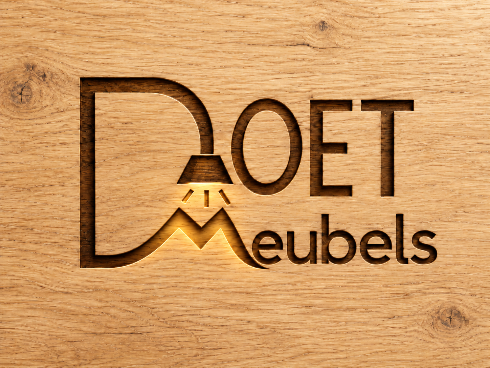

01 / SAMEN AAN TAFEL
Tafels
Een fijne plek voor het dagelijks leven. Denk aan een eettafel, salontafel of bureau in de maat die bij je past.

DOET MEUBELS · HOUT & VAKWERK
Een tafel om aan samen te komen. Een kast die precies past. Een meubel dat jouw huis eigen maakt.
Ontdek de mogelijkhedenVan eerste schets tot het laatste detail.
RUIMTE VOOR JOUW IDEE
Een rustig ontwerp begint bij de juiste verhoudingen. Het hout geeft de rest: warmte, structuur en karakter.
01 / SAMEN AAN TAFEL
Een fijne plek voor het dagelijks leven. Denk aan een eettafel, salontafel of bureau in de maat die bij je past.
02 / ALLES OP ZIJN PLEK
Opbergruimte die onderdeel wordt van je interieur. Van een los meubel tot een kast voor een bijzondere hoek.
03 / PRECIES JOUW IDEE
Een bank, wandplank of iets heel anders. Vertel wat je voor ogen hebt, dan krijgt jouw idee een eerste vorm.
De tekeningen geven een indruk van de mogelijkheden; het zijn geen foto's van uitgevoerd werk.
DE SCHOONHEID VAN HOUT
Een knoest, een warme tint, een lijn die doorloopt. Hout brengt iets natuurlijks in huis. Met een helder ontwerp krijgt het materiaal de ruimte om voor zichzelf te spreken.
VAN IDEE NAAR MEUBEL
Deze stappen laten zien hoe een maatwerktraject kan verlopen.
Wat zoek je? Waar komt het meubel te staan? Een foto, afmeting of schets helpt om jouw wensen te begrijpen.
Bespreek het ontwerp, de houtsoort en de afwerking. Leg ook de prijs en planning vast voordat het werk begint.
Na akkoord kan het maken beginnen. Spreek samen af hoe het meubel wordt geleverd en geplaatst.
ER IS RUIMTE VOOR JOUW IDEE
Vertel over je wensen, de beschikbare ruimte en het hout dat je mooi vindt.
Voeg hier je e-mailadres en telefoonnummer toe, zodat bezoekers je kunnen bereiken.